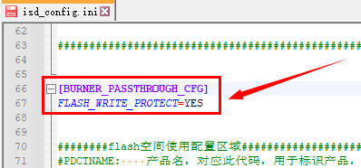

5.2. FLASH Parameters
5.2.1. Introduction
The FLASH parameters are a set of parameters that the SDK uses to enable the FLASH write protection feature and multi-algorithm authorization.
If the SDK supports FLASH write protection and multi-algorithm authorization, the FLASH parameters that correspond to the chip's FLASH ID must be configured before FLASH write protection and multi-algorithm authorization can be enabled.
Normally, the FLASH parameters are written into the chip's FLASH by the programmer.
However, during development and debugging you may need to do the following:
Enable the FLASH write protection parameter feature
Reactivate the multi-algorithm authorization feature (for example, when multi-algorithm authorization stops working after the programmer has programmed the multi-algorithm authorization data)
You can specify the FLASH parameter file with the -flash-params option of isd_download.exe.
The commonly used FLASH parameters are all stored in the FLASH parameter files, which can be obtained from the following links:
V0_V1 FLASH parameter file (click here to download)
V3 FLASH parameter file (click here to download)
If you find a FLASH ID model that is not supported, contact a Jieli engineer.
5.2.2. FLASH parameter versions
By default, the FLASH parameter versions that apply to the SDKs of the various chip models are as follows:
FLASH parameter version |
SDKs of applicable chip models |
|---|---|
V0 |
AC695X, AC635N, AC6083, AE695N |
V1 |
JL703N |
V3 |
AC707N, AW34N |
5.2.3. How to set the FLASH parameter file in the SDK
After downloading the FLASH parameter file, find the download.bat file in the SDK and add the -flash-params option after isd_download.exe, as shown below:
Important
If your download.bat file is generated from a download.c or download_bat.c file,
add the -flash-params option in download.c or download_bat.c instead

5.2.4. Enabling FLASH write protection on V0 chip models
For V0, you only need to add the following setting to isd_config.ini
Note
[BURNER_PASSTHROUGH_CFG]
FLASH_WRITE_PROTECT=YESAs shown below:

Important
SDKs that use V0 FLASH parameters to enable FLASH write protection do not need to configure OTP_CFG_SIZE.
5.2.5. Enabling FLASH write protection on V1/V3 chip models
Add the following settings to isd_config.ini
Note
[BURNER_PASSTHROUGH_CFG]
FLASH_WRITE_PROTECT=YESAs shown below:
Add the
OTP_CFG_SIZE=512setting to theEXTRA_CFG_PARAMsection of isd_config.iniNote
[EXTRA_CFG_PARAM]
OTP_CFG_SIZE=512As shown below:

5.2.6. Enabling the remote FLASH parameter feature
If you want the SDK to download the FLASH parameter file from the server and add it to the SDK automatically:
You can add the REMOTE_FLASH_PARAMS=YES setting to the EXTRA_CFG_PARAM section of isd_config.ini
Note
[EXTRA_CFG_PARAM]
REMOTE_FLASH_PARAMS=YES
As shown below:

The minimum version of isd_download.exe that supports the REMOTE_FLASH_PARAMS setting is as follows:
Tool |
Minimum version |
Description |
|---|---|---|
isd_download.exe |
4.2.76 |